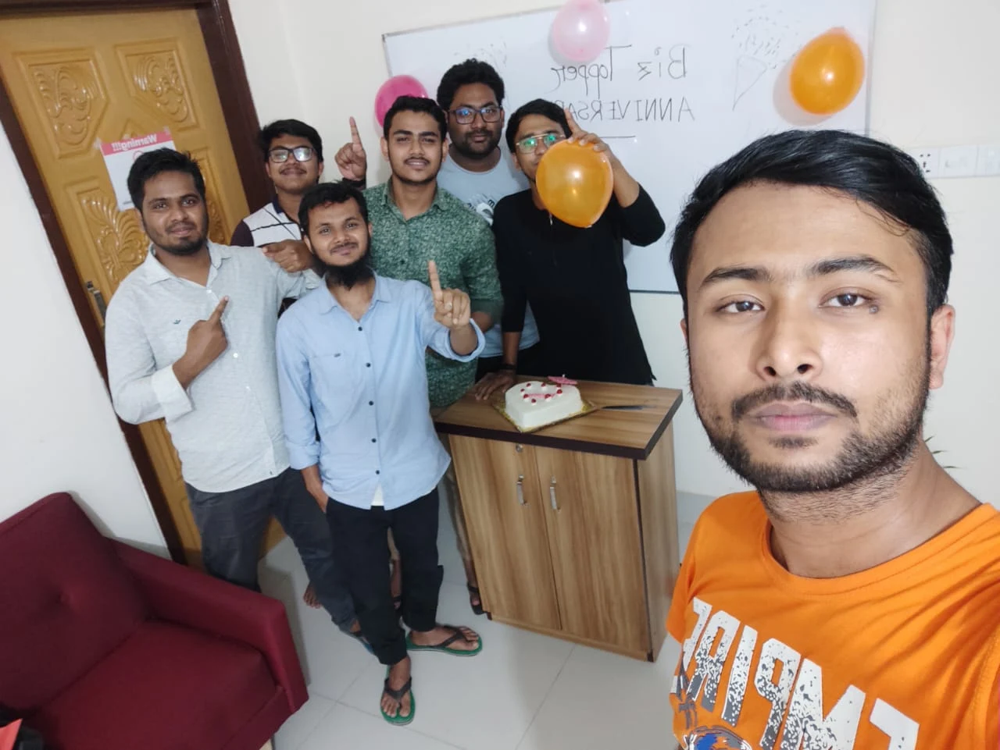

Vid I/O Summit · Keynote
Building a Scalable Sales Process
Shariful Islam · Founder, Vidiosa
Who ran a sales call yesterday?
assets/cold-open.png
I haven't run a sales call in 3 years. And our close rate still went up.
You don't have a sales problem. You have a founder-dependency problem.
Stay to the end. You leave with the whole thing, free.
Who is this guy, anyway?

Shariful Islam.
2016 to 2019 Freelancer
2019 to 2023 Biz Topper Ltd
2023 to now Vidiosa


What does a scalable sales process actually mean?
Scalable means one thing: it runs without you.
And without you, it does 4 jobs.
JOB 01
Capture
Catch every lead, instantly
JOB 02
Route
Send each to the right place
JOB 03
Move forward
Advance without remembering
JOB 04
Report
Tell you how it’s doing
1. Capture
2. Route
3. Move fwd
4. Report
Capture: catch every lead, instantly.
Most foundersLeads come from five places you check when you can. After hours, they die.
The fixOne auto-reply the second any lead lands, on any channel.
1. Capture
2. Route
3. Move fwd
4. Report
Route: send each lead to the right place.
Most foundersYou ARE the router. Everything waits on you to notice.
The fixNew leads auto-assign to one owner with a task.
1. Capture
2. Route
3. Move fwd
4. Report
Move forward: advance without remembering.
Most foundersFollow-up runs on memory and energy. Both run out.
The fixOne sequence that runs until they reply.
1. Capture
2. Route
3. Move fwd
4. Report
Report: make it tell you how it is doing.
Most foundersNo visibility, so you stay in the loop to feel safe.
The fixOne weekly number, reported to you, not chased.
Four jobs. Now let me show you all four, live.
JOB 01
Capture
Catch every lead, instantly
JOB 02
Route
Send each to the right place
JOB 03
Move forward
Advance without remembering
JOB 04
Report
Tell you how it’s doing
Meet Magic Motion Production.
MC
Mr CEO
Owner · handles the people, not the deals
AN
Aria Nolan
The SetterQualifies & books the lead
Setter pipeline
DC
Daniel Cole
The CloserRuns the call & closes
Closer pipeline
1. Capture
2. Route
3. Move fwd
4. Report
Eight leads this week. Every channel.
OB
Olivia Bennett
Brightpath SaaS
Interested inExplainer video
IG Instagram$1,200
MR
Marcus Reid
Nimbus Cloud
Interested inSaaS demo video
◆ Live Chat$1,695
PS
Priya Shah
Lumen Fitness
Interested inBrand video
▦ Booking Calendar$2,000
DC
David Cohen
Forge Apps
Interested inOnboarding series
▤ Contact Form$2,400
SL
Sarah Lin
Vega Foods
Interested inProduct launch video
f Facebook$1,800
JO
James Okafor
Atlas Realty
Interested inPromo video
✉ SMS$900
ER
Elena Rossi
Bloom Studio
Interested inRecruiting video
☎ Call$1,500
TV
Tomas Vega
Pixel Labs
Interested inEditing subscription
IG Instagram$995/mo
1. Capture
2. Route
3. Move fwd
4. Report
Every new lead routes itself.
The workflow · built once
✦
Contact created
New lead, any channel
▦
Add to Setter pipeline
New Lead stage
AN
Assign to Aria Nolan
The setter
✓
Create follow-up task
for Aria
◉
Notify Aria Nolan
Push + email
END
What fires, instantly
9:12
New lead assignednow
Marcus Reid · Live Chat
New lead assigned2m
Olivia Bennett · Instagram
New booking5m
Priya Shah · Booking Calendar
Task created5m
3 new leads · qualify & book
Tasks created · for Aria
Qualify & book Marcus Reid
Qualify & book Olivia Bennett
Confirm booking · Priya Shah
Setter Pipeline
Magic Motion Production · Aria Nolan
Open leads
20
Pipeline value
$31,250
New Lead7
Olivia Bennett | Explainer video
$1,200
🔒 Brightpath SaaS
InstagramAN
Marcus Reid | SaaS demo video
$1,695
🔒 Nimbus Cloud
Live ChatAN
David Cohen | Onboarding series
$2,400
🔒 Forge Apps
Contact FormAN
+4 more
Contacted3
Noah Park | Explainer video
$1,200
🔒 DataForge
InstagramAN
Mia Torres | SaaS demo video
$1,695
🔒 Settlr
Live ChatAN
+1 more
Engaged3
Liam Walsh | Short-form editing
$595/mo
🔒 Reelity
FacebookAN
Ava Reyes | Explainer video
$1,200
🔒 Tendr
InstagramAN
+1 more
Qualified2
Ben Carter | Marketing video
$895
🔒 AdNest
FacebookAN
Leo Schmidt | SaaS demo video
$1,695
🔒 Quanta
Live ChatAN
Call Booked3
Priya Shah | Brand video
$2,000
🔒 Lumen Fitness
Booking CalendarAN
Zoe Adams | Product launch
$1,800
🔒 Launchpad
SMSAN
+1 more
Nurture2
Felix Moore | Short-form editing
$595/mo
🔒 Cutly
SMSAN
Ruby Hart | Brand sizzle
$1,500
🔒 Vibe
FacebookAN
Disqualified2
Owen Diaz | Marketing video
$895
🔒 Spree
CallAN
Cold Co. | Out of scope
n/a
🔒 Cold Co.
Contact FormAN
Setter Pipeline
Magic Motion Production · Aria Nolan
Open leads
20
Pipeline value
$31,250
New Lead2
James Okafor | Feature animation
$895
🔒 PayUp
SMSAN
Noah Park | Explainer video
$1,200
🔒 DataForge
InstagramAN
Contacted3
Sarah Lin | Product launch
$1,800
🔒 Vega Foods
FacebookAN
Tomas Vega | Editing subscription
$995/mo
🔒 Pixel Labs
InstagramAN
+1 more
Engaged3
David Cohen | Onboarding series
$2,400
🔒 Forge Apps
Contact FormAN
Ava Reyes | Explainer video
$1,200
🔒 Tendr
InstagramAN
+1 more
Qualified3
Marcus Reid | SaaS demo video
$1,695
🔒 Nimbus Cloud
Live ChatAN
Ben Carter | Marketing video
$895
🔒 AdNest
FacebookAN
+1 more
Call Booked3
Priya Shah | Brand video
$2,000
🔒 Lumen Fitness
Booking CalendarAN
Ivy Chen | Onboarding series
$2,400
🔒 Stackly
Booking CalendarAN
+1 more
Nurture2
Olivia Bennett | Explainer video
$1,200
🔒 Brightpath SaaS
InstagramAN
Felix Moore | Short-form editing
$595/mo
🔒 Cutly
SMSAN
Disqualified2
Elena Rossi | Recruiting video
$1,500
🔒 Bloom Studio
CallAN
Owen Diaz | Marketing video
$895
🔒 Spree
CallAN
1. Capture
2. Route
3. Move fwd
4. Report
Quiet leads nurture themselves.
The workflow · built once
✦
Lead goes quiet
48 hours, no reply
▦
Split by service
right message per offer
✉
Send value touch
helpful, not pushy
◴
Wait & repeat
7 touches over 30 days
✓
Exit on reply
they answer, it stops
END
The emails the lead gets
AAria NolanStill thinking about your explainer? — what makes a SaaS explainer actually convertDay 1
AAria NolanThe 3 reasons most explainers fall flat — most lose the viewer in the first 8 secondsDay 3
AAria NolanA 40-second example you might like — an explainer that lifted demo signupsDay 6
AAria NolanWhat skipping it quietly costs — every week without one is signups you missDay 10
AAria NolanHow long does it actually take? — script to final in about 5 to 7 daysDay 15
AAria NolanWant me to outline yours, free? — a 3-scene structure for your product, no costDay 22
AAria NolanShould I close your file? — no reply, so I will assume timing is offDay 30
1. Capture
2. Route
3. Move fwd
4. Report
Ready leads pass to the closer.
The workflow · built once
✦
Stage = Call Booked
Setter pipeline
▦
Move to Closer pipeline
Booked stage
DC
Assign to Daniel Cole
the closer
◉
Notify Daniel
with the full brief
END
Daniel gets the deal
1:02
Deal assignednow
Marcus Reid · brief attached
Call in 1 hournow
Marcus Reid · Today 2:00 PM
Handed to Daniel
Run call · Marcus Reid
Closer Pipeline
Magic Motion Production · Daniel Cole
Open leads
14
Pipeline value
$24,800
Booked3
Marcus Reid | SaaS demo video
$1,695
🔒 Nimbus Cloud
Live ChatDC
Priya Shah | Brand video
$2,000
🔒 Lumen Fitness
Booking CalendarDC
+1 more
Showed2
Tom Hayes | Ad creative
$3,900
🔒 Northstar
FacebookDC
+1 more
No-Show2
Jordan Lee | Promo video
$1,800
🔒 Helix
SMSDC
+1 more
Proposal Sent3
David Cohen | Onboarding series
$2,400
🔒 Forge Apps
Contact FormDC
Sara Kim | Event recap
$2,600
🔒 Lumio
InstagramDC
+1 more
In Negotiation2
Leo Park | Video series
$5,200
🔒 Cadence
Booking CalendarDC
+1 more
Won3
Nina Roy | Recruiting film
$2,900
🔒 Vela
Booking CalendarDC
Chen Wei | Ad set
$1,400
🔒 Brightly
FacebookDC
+2 more
Lost2
Cold Co. | Out of scope
n/a
🔒 Cold Co.
Contact FormDC
+1 more
1. Capture
2. Route
3. Move fwd
4. Report
No-shows reschedule themselves.
The workflow · built once
✦
Stage = No-Show
Closer pipeline
✉
Send no-show email
warm, no guilt
▤
Send no-show SMS
reschedule link
◴
Follow up 3x
over a week
▦
No reply → Lost
clean exit
END
What the lead gets
Reschedule link, sent instantly
Follow-up SMS, day 1 and day 3
No reply, moved to Lost
1. Capture
2. Route
3. Move fwd
4. Report
Proposals follow up themselves.
The workflow · built once
✦
Stage = Proposal Sent
Closer pipeline
◴
Wait 2 days
no reply
✉
Send follow-up
gentle nudge
▤
Wait, nudge again
day 4, day 7
◉
Still quiet → ping Daniel
human steps in
END
The follow-up, automatic
Day 2 · follow-up email
Day 4 · follow-up SMS
Day 7 · final email, then ping Daniel
1. Capture
2. Route
3. Move fwd
4. Report
And I just watch the numbers.
Conversations
128
across all 7 channels
Appointments
24
booked automatically
Closed won
9
deals signed
Show rate
83%
no-shows rebook themselves
Booked calls · last 8 weeks
Revenue
$31k
this month, +38% MoM
Your time in it
0hrs
it runs without you
Eight leads. Two people. I touched none of it.
So what is actually running all of this?
The team, the capture, the pipelines.
The team
Two roles, setter and closer, each owning one board.
Capture
Every channel feeds in: social, live chat, SMS, calls, forms, calendar.
Two pipelines
Setter qualifies and books. Closer runs and closes. Clean handoff.
Manage and nurture: the workflows.
01
Instant reply
02
Auto-assign + task
03
7-touch nurture
04
Direct-booking catch
05
Ready-for-closer handoff
06
Confirmations + reminders
07
No-show reschedule
08
Proposal follow-up
And the rest of the stack.
All-in-one inbox
Every conversation, every channel, one place.
Contacts + tagging
Segment, filter, trigger by tag.
Proposals + contracts
Sent, signed, tracked.
Invoicing + payments
Paid without a chase.
Calendars
Booking and scheduling built in.
Reporting
The scoreboard you watch.
That is one team and one system. Not a dozen tools.
CaptureTwo pipelinesInboxWorkflowsContactsProposalsPayments
HighLevel
Not seven tools. One platform.
This is why I haven't run a call in 3 years.
I use HighLevel. But the four jobs work on whatever you already use.
Pick one of the four. Automate the smallest piece Monday.
And you don't start from scratch.
Scan it. It is free.

The full system
A snapshot you can import in minutes.
Free
Replace with your real QR before the talk
Questions?
Vidiosa · vidiosa.com